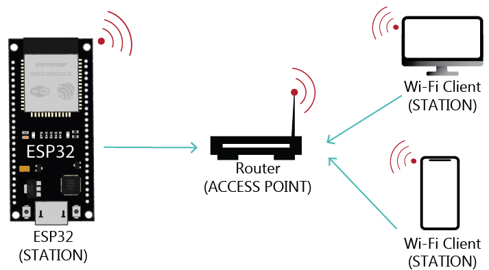
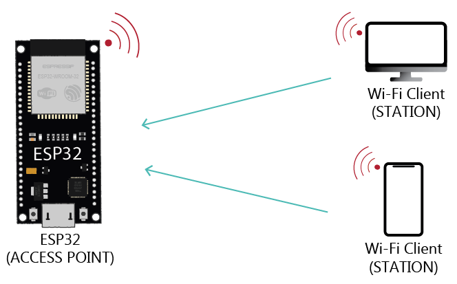

WiFi可應用於長距離(50-100公尺)資料傳輸與控制，ESP32 WiFi包含三種模式 站台(WIFI_STA)、熱點(WIFI_AP)、站台熱點(WIFI_STA_AP)。
這裡僅介紹站台與熱點，請注意程式開始必須包含WiFi程式庫。
#include <WiFi.h>
ESP32 WiFi站台模式透過外部熱點接網際網路如下圖：

ESP32 WiFi站台模式(WiFi.mode(WIFI_STA))可透過 WiFi.scanNetworks() 命令取得外部熱點個數並藉由 WiFi.SSID、WiFi.RSSI、WiFi.encryptionType 來取得熱點名稱、訊號強度與加密方式(WIFI_AUTH_OPEN、WIFI_AUTH_WEP、WIFI_AUTH_WPA_PSK、WIFI_AUTH_WPA2_PSK、WIFI_AUTH_WPA_WPA2_PSK)，上述加密方式對應至數字 0, 1, 2, 3, 4。以下程式設定ESP32 WiFi站台模式，掃描附近熱點並輸出熱點名稱、訊號強度與加密方式。
#include "WiFi.h" //匯入WiFi程式庫
void setup() {
Serial.begin(115200);
WiFi.mode(WIFI_STA);
WiFi.disconnect(); //中斷任何連接熱點
delay(100);
int n = WiFi.scanNetworks(); //掃描熱點並傳回熱點個數
for (int i=0; i<n; ++i) {
// 輸出每個熱點名稱、強度及加密方式
Serial.print("熱點:");
Serial.print(i+1);
Serial.print(": ");
Serial.print(WiFi.SSID(i));
Serial.print(" (");
Serial.print(WiFi.RSSI(i));
Serial.print(")");
Serial.println(WiFi.encryptionType(i));
delay(10);
}
}
void loop() {
}
連接熱點須執行 WiFi.begin(熱點SSID名稱,連接密碼)，連接後可藉由 WiFi.status() 命令傳回現在連接狀態，當連接狀態傳回 WL_CONNECTED 表示連上熱點。下列程式將連接同學設定熱點：
#include "WiFi.h" //匯入WiFi程式庫
void setup() {
Serial.begin(115200);
WiFi.mode(WIFI_STA);
WiFi.disconnect(); //中斷任何連接熱點
delay(100);
WiFi.begin(連接熱點SSID名稱,連接密碼); //名稱與密碼需置於雙引號中
while (WiFi.status() != WL_CONNECTED) { //未接上熱點時每隔1秒檢查一次
Serial.print('.');
delay(1000);
}
Serial.println(WiFi.localIP()); //印出鏈接後IP位址
}
void loop() {
}
ESP32 WiFi熱點模式如下圖：

ESP32 WiFi熱點模式(WiFi.mode(WIFI_AP))可透過 WiFi.softAP(站台名稱,站台密碼) 來設定站台名稱與連接密碼，請注意站台名稱與連接密碼需置於雙引號中。熱點設定完畢後，可利用 WiFi.softAPIP() 命令取得熱點IP位址，請注意IP位址資料類型為 IPAddress。
#include "WiFi.h" //匯入WiFi程式庫
void setup() {
Serial.begin(115200);
WiFi.mode(WIFI_AP);
WiFi.softAP("長榮1號","12345678"); //密碼一定要8位
IPAddress IP = WiFi.softAPIP();
Serial.print("熱點IP位址");
Serial.println(IP);
}
void loop() {
}
網頁伺服器目的用於接收處理使用者網際網路需求，ESP32 WiFi透過 WiFiServer 網頁伺服器變數名稱(連接埠號碼) 宣告網頁伺服器變數名稱及連接埠號碼(預設使用80)後，之後在設定完熱點模式後，藉由命令 WiFiServer 網頁伺服器變數名稱.begin()來開啟伺服器。
#include "WiFi.h" //匯入WiFi程式庫
WiFiServer server(80); //設定網頁伺服器變數名稱為 server
void setup() {
Serial.begin(115200);
WiFi.mode(WIFI_AP);
WiFi.softAP("長榮1號","12345678"); //密碼一定要8位
IPAddress IP = WiFi.softAPIP();
Serial.print("熱點IP位址");
Serial.println(IP);
server.begin();
}
void loop() {
}
網頁伺服器開啟後，執行程式(loop())中，首先利用命令 server.available() 檢查是否有使用者連接至伺服器，server.available() 傳回 WiFiClient 值，我們用條件判斷檢查是否有傳回值，如果有而且使用者在繼續連線下，我們將透過 client.read() 取得使用者傳送資料，一直讀到 Enter鍵(\n)後再判斷使用者傳送資料。
完整網頁控制數位腳位16 LED開關原始碼
#include "WiFi.h" //匯入WiFi程式庫
WiFiServer server(80); //設定網頁伺服器變數名稱為 server
String indata; //用於儲存使用者傳送資料
void setup() {
Serial.begin(115200);
pinMode(16,OUTPUT); //設定數位腳位16控制LED開關
WiFi.mode(WIFI_AP);
WiFi.softAP("長榮1號","12345678"); //密碼一定要8位
IPAddress IP = WiFi.softAPIP();
Serial.print("熱點IP位址");
Serial.println(IP);
server.begin();
}
void loop() {
WiFiClient client = server.available(); //取得連接使用者並存於變數client
while (client.connected()) {
char c = client.read(); //逐字讀入傳送資料
indata += c; //將讀入字存到變數 indata
if (c=='\n') {
if (client) { //設定網際網路HTTP傳回擋頭
client.println("HTTP/1.1 200 OK");
client.println("Content-type:text/html");
client.println("Connection: close");
client.println();
}
if (indata.indexOf("GET /on") >= 0) { //使用者網址列 伺服器ip/on 則開啟LED
digitalWrite(16, HIGH);
} else if (indata.indexOf("GET /off") >= 0) { //使用者網址列 伺服器ip/off 則關閉LED
digitalWrite(16, LOW);
}
indata="";
client.stop();
}
}
}
網頁伺服器透過HTTP通訊協定進行資料傳輸，HTTP通訊協定在資料傳送完畢後即中斷連接，同時如果使用者沒有送出任何要求(Request)、伺服器不會傳回任何訊息，這種資料傳輸模式比較不適用於即時或雙向控制應用，因此將介紹新的傳輸模式WebSocket。
WebSocket一開始使用HTTP通訊協定與Socket伺服器連接，當連接之後，連接不會中斷同時提供雙向資訊傳遞，因此非常適用於即時雙向的控制應用。要在ESP 32使用Web Socket，必須下載安裝兩個程式庫 AsyncTCP與ESPAsyncWebSer。下載後，請開啟Arduino IDE，選擇草稿碼-匯入程式庫-加入ZIP程式庫，並選擇下載的 AsyncTCP.zip及ESPAsyncWebSer.zip檔。執行時先連上熱點、開啟瀏覽器並輸入192.168.1.2即可顯示控制畫面。
#include <WiFi.h>
#include <AsyncTCP.h>
#include <ESPAsyncWebServer.h>
const char* ssid = "長榮1號"; //請自訂熱點名稱
const char* password = "12345678"; //請自訂熱點密碼(8位)
AsyncWebServer server(80); //開啟80埠網頁伺服器及對應 websocket伺服器
AsyncWebSocket ws("/ws");
bool ledState = 0; //變數ledState用於紀錄LED開(1)或關(0)
const int ledPin = 2; //ESP32預設LED數位腳位
//設定顯示網頁
const char index_html[] PROGMEM = R"rawliteral(
<!DOCTYPE HTML><html>
<head>
<meta charset="utf-8">
<title>ESP WebSocket伺服器</title>
<meta name="viewport" content="width=device-width, initial-scale=1">
<link rel="icon" href="data:,">
</head>
<body>
<div>
<h1>ESP WebSocket伺服器</h1>
</div>
<div class="content">
<div class="card">
<h2>Output - GPIO 2</h2>
<p>狀態: <span id="state">%STATE%</span></p>
<p><button id="button">開/關</button></p>
</div>
</div>
<script>
var gateway = `ws://${window.location.hostname}/ws`;
var websocket;
window.addEventListener('load', onLoad);
function initWebSocket() {
console.log('WebSocket連接...');
websocket = new WebSocket(gateway); //連接WebSocket伺服器
websocket.onopen = onOpen; //設定接上動作
websocket.onclose = onClose; //設定斷接動作
websocket.onmessage = onMessage; //設定收到訊息動作
}
function onOpen(event) {
console.log('已連接');
}
function onClose(event) {
console.log('關閉連接');
setTimeout(initWebSocket, 2000); //重啟連接
}
function onMessage(event) {
var state;
if (event.data == "1"){
state = "開";
}
else{
state = "關";
}
document.getElementById('state').innerHTML = state;
}
function onLoad(event) {
initWebSocket();
initButton();
}
function initButton() {
document.getElementById('button').addEventListener('click', toggle);
}
function toggle(){
websocket.send('toggle');
}
</script>
</body>
</html>
)rawliteral";
//傳送訊息至所有連接裝置
void notifyClients() {
ws.textAll(String(ledState));
}
//判斷接收資料變數data值是否為 toggle
void handleWebSocketMessage(void *arg, uint8_t *data, size_t len) {
AwsFrameInfo *info = (AwsFrameInfo*)arg;
if (info->final && info->index == 0 && info->len == len && info->opcode == WS_TEXT) {
data[len] = 0;
if (strcmp((char*)data, "toggle") == 0) {
ledState = !ledState;
notifyClients();
}
}
}
//設定WebSocket伺服器處理事件，
void onEvent(AsyncWebSocket *server, AsyncWebSocketClient *client, AwsEventType type,
void *arg, uint8_t *data, size_t len) {
switch (type) {
case WS_EVT_CONNECT:
Serial.printf("WebSocket client #%u connected from %s\n", client->id(), client->remoteIP().toString().c_str());
break;
case WS_EVT_DISCONNECT:
Serial.printf("WebSocket client #%u disconnected\n", client->id());
break;
case WS_EVT_DATA:
handleWebSocketMessage(arg, data, len);
break;
case WS_EVT_PONG:
case WS_EVT_ERROR:
break;
}
}
//設定WebSocket伺服器起動步驟
void initWebSocket() {
ws.onEvent(onEvent);
server.addHandler(&ws);
}
//將傳回網頁中STATE變數改變為傳回值
String processor(const String& var){
Serial.println(var);
if(var == "STATE"){
if (ledState){
return "開";
}
else{
return "關";
}
}
return String();
}
//ESP 32起始設定
void setup() {
Serial.begin(115200);
//一開始關閉預設LED(GPIO 2)
pinMode(ledPin, OUTPUT);
digitalWrite(ledPin, LOW);
// 設定熱點
WiFi.mode(WIFI_AP);
WiFi.softAP(ssid,password);
// 設定虛擬固定IP 192.168.1.2
IPAddress AP_LOCAL_IP(192, 168, 1, 2);
IPAddress AP_GATEWAY_IP(192, 168, 1, 4);
IPAddress AP_NETWORK_MASK(255, 255, 255, 0);
if (!WiFi.softAPConfig(AP_LOCAL_IP, AP_GATEWAY_IP, AP_NETWORK_MASK)) {
Serial.println("設定IP錯誤");
return;
}
// 顯示設定IP
Serial.print("AP IP address: ");
IPAddress IP = WiFi.softAPIP();
Serial.print("熱點IP位址");
Serial.println(IP);
//呼叫WebSocket啟動步驟
initWebSocket();
// 設定連接WebSocket時動作
server.on("/", HTTP_GET, [](AsyncWebServerRequest *request){
request->send_P(200, "text/html", index_html, processor);
});
// 啟動WebSocket伺服器
server.begin();
}
void loop() {
ws.cleanupClients();
digitalWrite(ledPin, ledState);
}